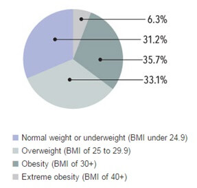

“Move more, Eat less”
Obesity is recognized as a chronic disease and one of the major healthcare challenges facing us today. Obesity is considered to result from an imbalance between energy uptake and energy expenditure.
Obesity is defined as abnormal or excessive fat accumulation that may impair health.
Globally one in six adults is obese and nearly 2.8 million individuals die each year due to overweight or obesity. Overweight and obesity are the fifth leading cause of death in the world, accounting for nearly 3.4 million deaths annually.
65% of the world's population live in a country where overweight and obesity kills more people than underweight. Globally, 44% of diabetes, 23% of ischaemic heart disease and 7–41% of certain cancers are attributable to overweight and obesity.
Body mass index (BMI) is a simple index of weight-for-height that is commonly used to classify overweight and obesity in adults. It is defined as a person's weight in kilograms divided by the square of his height in meters (kg/m2).
| BMI (Body Mass Index) | Weight status |
| Below 18.5 | Under weight |
| 18.5 – 24.9 | Normal |
| 25.0 – 29.9 | Over weight |
| 30.0 34.9 | Grade 1 Obesity |
| 35.0 – 39.9 | Grade 2 Obesity |
| 40.0 and higher | Grade 3 Obesity (Extreme obesity) |
Prevalence of obesity:According to the journal Lancet, Number of overweight and obese people globally increased from 857 million in 1980 to 2.1 billion in 2013.
Currently, more than 50 per cent of the 671 million obese individuals in the world live in 10 countries, with 62 per cent living in developing countries, Lancet found.
The USA accounted for 13 per cent of obese people worldwide in 2013, while China and India jointly accounted for 15 per cent.
TOP 3 NATIONS WITH THE HIGHEST NUMBER OF OBESE PEOPLE1. USA
Overweight and obesity rate: 70.9% (men) and 61.9% (women)
Obesity rate: 31.7% (men) and 33.9% (women)
2. China
Overweight and obesity rate: 28.3% (men) and 27.4% (women)
Obesity rate: 3.8% (men) and 5% (women)
3. India
Overweight and obesity rate: 19.5% (men) and 20.7% (women)
Obesity rate: 3.7% (men) and 4.2% (women)
Obesity survey conducted in United States during 2011 – 2012 (Ruopeng An, 2014)
- 35.8 percent of women (aged 20+) were obese
- 29.7 percent of women (aged 20+) were overweight
- 8 percent of women (aged 20+) were morbidly obese
Obesity is a leading risk factor for many adverse health outcomes including type 2 diabetes, hypertension, dyslipidemia, coronary heart disease, and certain types of cancer. The obesity prevalence in the US increased substantially during the last few decades.
Overweight and obesity among adults aged 20 and over: United states, 1988 – 1994 through 2009 – 2012.Reducing the prevalence of obesity is a public health priority because obesity is correlated with excess morbidity and mortality. In particular, Grade 2 or higher obesity (BMI of 35 or higher) significantly increase the risk of death. In 2009 -2012, 4.4% of men and 8.2% of women aged 20 and over had Grade 3 obesity.
Obesity among adults aged 55 – 64: United States, 1999 – 2002 and 2009 - 2012
| 1999- 2002 | 2009 – 2012 |
| Obesity( BMI ≥ 30) | 38.9 % | 40.6 % |
SOURCE: CDC/NCHS, National Health and Nutrition Examination Survey.
According to WHO, 2014
| Country | BMI >= 30( age standardized estimate) |
| 2014 | 2010 |
| 18+ years | 18+ years |
| Both sexes | Female | Male | Both sexes | Female | Male |
| United States | 33.7 | 34.7 | 32.6 | 31.2 | 32.5 | 29.8 |
According to National Health and Nutrition Examination Survey 2010,
Adults age 20 and older- More than two-thirds (68.8 percent) of adults are considered to be overweight or obese.
- More than one-third (35.7 percent) of adults are considered to be obese.
- More than 1 in 20 (6.3 percent) have extreme obesity.
- Almost 3 in 4 men (74 percent) are considered to be overweight or obese.
- The prevalence of obesity is similar for both men and women (about 36 percent).
About 8 percent of women are considered to have extreme obesity.
Health Risks of Overweight and Obesity- type 2 diabetes
- heart disease
- high blood pressure
- nonalcoholic fatty liver disease (excess fat and inflammation in the liver of people who drink little or no alcohol)
- osteoarthritis (a health problem causing pain, swelling, and stiffness in one or more joints)
- some types of cancer: breast, colon, endometrial (related to the uterine lining), and kidney
- stroke
Overweight and Obesity among Adults Age 20 and Older, United States, 2009–2010>

Overweight and obesity are linked to more deaths worldwide than underweight. Weight maintenance with lifestyle modification – although challenging – is possible but requires long-term support to reinforce diet, physical activity and behavioural changes. Physical activity is a perennial factor of obesity prevention. Sleep restriction increases food intake and total energy expenditure with inconsistent effects on integrated energy balance as operationalized by weight change.
References,
Ruopeng An, “Prevalence and Trends of Adult Obesity in the US, 1999 – 2012,” ISRN Obesity, vol. 2014, Article ID 185132, 6 pages, 2014. doi: 10.1155/2014/185132